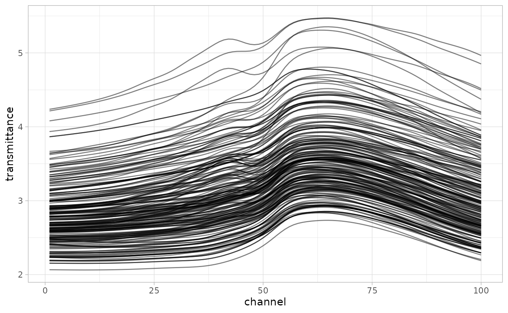

baseline
baseline.Rmd
library(tidyverse)
#> ── Attaching packages ─────────────────────────────────────── tidyverse 1.3.2 ──
#> ✔ ggplot2 3.3.6 ✔ purrr 0.3.4
#> ✔ tibble 3.1.8 ✔ dplyr 1.0.9
#> ✔ tidyr 1.2.0 ✔ stringr 1.4.0
#> ✔ readr 2.1.2 ✔ forcats 0.5.1
#> ── Conflicts ────────────────────────────────────────── tidyverse_conflicts() ──
#> ✖ dplyr::filter() masks stats::filter()
#> ✖ dplyr::lag() masks stats::lag()
library(tidymodels)
#> ── Attaching packages ────────────────────────────────────── tidymodels 1.0.0 ──
#> ✔ broom 1.0.0 ✔ rsample 1.1.0
#> ✔ dials 1.0.0 ✔ tune 1.0.0
#> ✔ infer 1.0.2 ✔ workflows 1.0.0
#> ✔ modeldata 1.0.0 ✔ workflowsets 1.0.0
#> ✔ parsnip 1.0.0 ✔ yardstick 1.0.0
#> ✔ recipes 1.0.1
#> ── Conflicts ───────────────────────────────────────── tidymodels_conflicts() ──
#> ✖ scales::discard() masks purrr::discard()
#> ✖ dplyr::filter() masks stats::filter()
#> ✖ recipes::fixed() masks stringr::fixed()
#> ✖ dplyr::lag() masks stats::lag()
#> ✖ yardstick::spec() masks readr::spec()
#> ✖ recipes::step() masks stats::step()
#> • Use tidymodels_prefer() to resolve common conflicts.
library(measure)
theme_set(theme_light())Let’s use the meats data from {modeldata} to demonstrate baseline correction.
Data Cleanup
Before we can perform baseline correction, we need to reshape the data. It is in a wide format where the columns represent the wavelength and the value is transmittance. The step_baseline() function operates on long format data. We can reshape this data with tidyr.
meats2 <-
meats |>
rowid_to_column(var = "id") |>
pivot_longer(cols = starts_with("x_"),
names_to = "channel",
values_to = "transmittance") |>
mutate(channel = str_extract(channel, "[:digit:]+") |> as.integer())
meats2 |>
ggplot(aes(x = channel, y = transmittance, group = id)) +
geom_line(alpha = 0.5) + theme_light()
meats2 |>
group_by(id) |>
subtract_rf_baseline(yvar = transmittance, span = 0.8) |>
ggplot(aes(x = channel, color = water, group = id)) +
geom_line(aes(y = transmittance), alpha = 0.5) +
scale_color_viridis_c() +
ggtitle("")